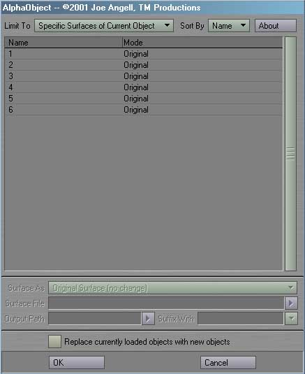
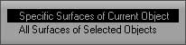
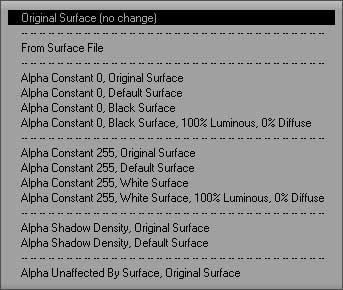
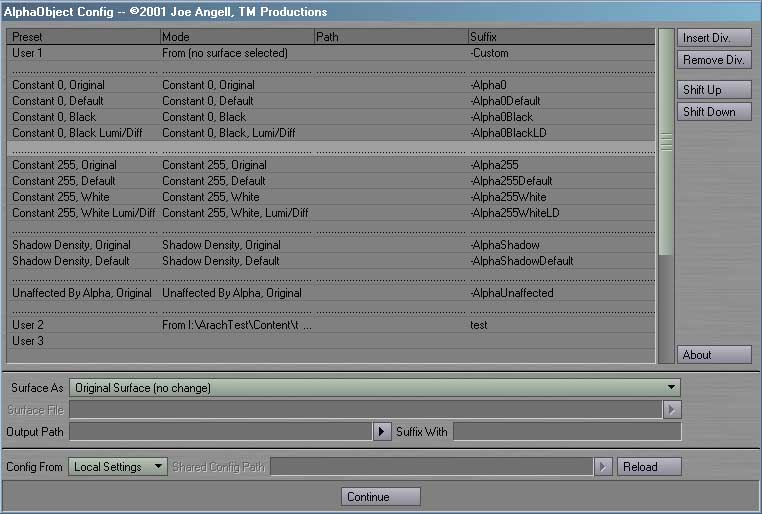

AlphaObjects is a
plug-in for Lightwave 6.0 or greater. It allows you to quicky and easily
create alpha-only objects for a variety of situations, including shadow
catchers and matte objects. This plug-in requires Lightwave 6.0 or greater.
To install AlphaObjects, just follow these steps:
- If any copies of Layout are running, quit them now.
- Create a new directory in your Lightwave Plugins directory called TMPro and copy AlphaObjects.p into it.
- Load Layout
- Select Add Plug-ins.
- Find and add AlphaObjects.p. Layout should report that two plug-ins have been added.
- Quit Layout. This will update your Lightwave
config and ensure that everything works properly.
- The next time you run Layout, you can launch
the AlphaObjects plug-ins from
the Generics pop-up in the Plug-in Options Panel, or assign them to keys
or buttons on the interface with Configure Keys and Configure Menus. Please
refer to your Lightwave documentation for more information. The plug-ins will be
the prefixed with TM_P under the Plugins heading of the
Configure Keys and Configure Menus panels.
AlphaObjects includes the following plugins:
Alpha Objects

The Alpha Objects generic plug-in is the core of this package. It
actually creates new objects with different alphas. To use Alpha Objects, you must
first select the objects you want to affect. Once you have some selected, activating the
plug-in will open an interface like the one above.

The Limit To popup allows you to batch modify all surfaces of all selected objects,
or just select surfaces of a single object.
The Sort By popup can be used to sort the items by name or by their new alpha mode.

The currently selected entry in the list can have it's alpha mode changed by using the Surface
As popup. As well as performing no change and selecting from a number of presets, you can
select as specific surface to replace the others. Although there is the illusion of multiple
selection in the list, multi-select doesn't actually work due to limitations to LWPanels.
When the From Surface mode is selected, the Surface File field can be used to
pick a .srf file.
The Output Path field is used to set a common path to output all the newly created alpha
objects to. If this is blank, the objects will be created in the same directoy as the originals.
These objects will have a suffix added to the end of their name based on the Suffix With
field. The popup to it's right allows you to select from a number of presets, including custom
presets created with Alpha Objects Config. Selecting an entry from this popup
will set all the fields.
By default, the new alpha objects will be written to disk, but the original objects will stay in the
scene. If Replace currently load objects with new objects is checked, the new alpha objects
will be loaded in place of those in the scene file.
Alpha Objects Config

Alpha Objects Config can be used to customize the the presets popup list. The
entries in the list represent different presets, which are shown in the preset popup by suffix.
The leftmost column represents the generic plug-in that this preset maps to. The second column
is the mode, followed by the output path and the suffix of the generated file.
The buttons on the right of the list allow dividers to be inserted and removed, and allow entries
to be shifted up and down the list.
By default, the configuration file is stored on the local machine, but larger studios can share
the config using the Config From popup and the Shared Config Path. The settings
can be reloaded using the Reload button.
Replacement Generics
Also included are a series of preset replacement generics, plus a dozen user replacement generics.
These replace the existing file with another of the same name in the same directory, but with a
different suffix, thus allowing quick swaps between the original objects and various alpha objects.
The suffixs match those set in Alpha Objects Configure
Revision History
- 04-22-01 First public release
Bugs? Feature requests? Can't get it to work? Feel free to contact us if
you're having any problems or want to request a feature.
All programs presented here are Copyright ©2000-2002 TM Productions, All Rights Reserved.
Please contact us if you would like to distribute any of these programs,
or if you find any particularly useful.
|